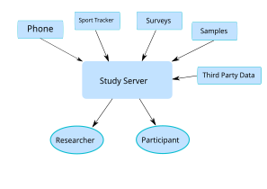
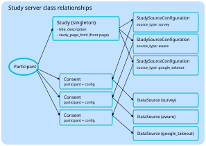
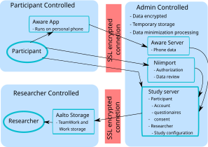

## tracking Study Participants Jarno Rantaharju - June 10, 2026 --- ## The problem - Manage participant details - Consent information - Contact information - Participant status - Data sovereignty and security --- ### Data sources <div style="display: flex;"> <div style="flex: 1;"> <p></p> </div> </div> --- ## The problem - Rule of 2: </br> Next time I should not need to start from zero - Done before in [Koota](https://github.com/digitraceslab/koota-server) - and probably many other local implementations --- ## Study Server - Django - Comes with: - Login and user management - Security features - Admin interface --- ## Study Server We add: - Profile information stored separately - Replaced identifiers in data - More stringent security - Data source plugin system --- ### Data Sources and Consents We add: - Source configurations (researcher) - Consents - Data sources (participant) --- ### Data Sources and Consents <div style="display: flex;"> <div style="flex: 1;"> <p></p> </div> </div> --- ### Researcher [Demo](http://localhost:8000) - Configures the study - Sets up data source configurations - Creates a study page - Writes consent forms - Sees participant ids but not identifying information - Can send reminders or contact participants --- ### Participant [Demo](http://localhost:8000) - Creates an account and joins the study - Consents to each data source - Gets set up instructions for each source - Sees the data and can download it - Can delete their data or withdraw --- ### Data Sources and Consents - Data source configurations - set up by the reseachers - what data source are required for the study - consent forms --- ### Data Sources and Consents - Consent - connects participant, study and data source - tracks what the participant consented to --- ### Data Sources and Consents - Data source tells the server - instructions to give participants - what types of data exist - how to pull data - Custom admin interface --- ### Data administrator - Separate role from researchers - Manages the server - Researchers do not need account information - Or identifiers removed from the data. --- ### Data Sources - We currently support: - Surveys - Google and TikTok portability API (using Niimport) - Aware framework for phone data collection --- ## Data flows <div style="display: flex;"> <div style="flex: 1;"> <p></p> </div> </div> --- ## Questions